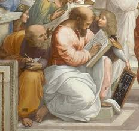
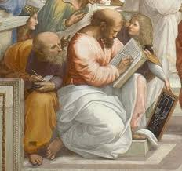

Raphael is an Italian Renaissance painter and architect Raphael became Perugino's apprentice in 1504. Living in Florence from 1504 to 1507, he began painting a series of "Madonnas." In Rome from 1509 to 1511, he painted the Stanza della Segnatura ("Room of the Signatura") frescoes located in the Palace of the Vatican. He later painted another fresco cycle for the Vatican, in the Stanza d'Eliodoro ("Room of Heliodorus"). In 1514, Pope Julius II hired Raphael as his chief architect. Around the same time, he completed his last work in his series of the "Madonnas," an oil painting called the Sistine Madonna. Raphael died in Rome on April 6, 1520. Raphael was born Raffaello Sanzio on April 6, 1483, in Urbino, Italy. At the time, Urbino was a cultural center that encouraged the Arts. Raphael’s father, Giovanni Santi, was a painter for the Duke of Urbino, Federigo da Montefeltro. Giovanni taught the young Raphael basic painting techniques and exposed him to the principles of humanistic philosophy at the Duke of Urbino’s court. In 1494, when Raphael was just 11 years old, Giovanni died. Raphael then took over the daunting task of managing his father’s workshop. His success in this role quickly surpassed his father’s; Raphael was soon considered one of the finest painters in town. As a teen, he was even commissioned to paint for the Church of San Nicola in the neighboring town of Castello.
 
